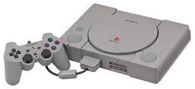

História da PlayStation
A PlayStation é uma marca de consolas de videojogos criada pela Sony. A primeira consola foi lançada em 1994 e rapidamente se tornou um enorme sucesso em todo o mundo.
Desde então, a PlayStation evoluiu ao longo dos anos, trazendo melhorias significativas em gráficos, desempenho e experiência de jogo. Cada nova geração trouxe inovação e ajudou a definir a indústria dos videojogos.
Evolução das consolas
- PlayStation 1 (1994) – Primeira consola da Sony
- PlayStation 2 (2000) – A consola mais vendida da história
- PlayStation 3 (2006) – Introdução ao HD e jogos online
- PlayStation 4 (2013) – Grande foco em gráficos e comunidade
- PlayStation 5 (2020) – Nova geração com SSD rápido e Ray Tracing
Consolas PlayStation
